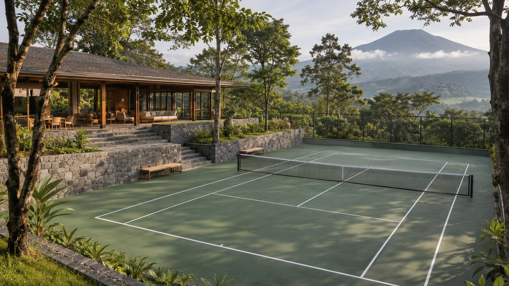
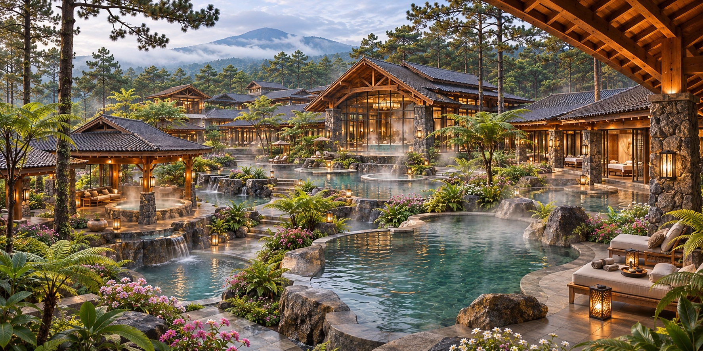
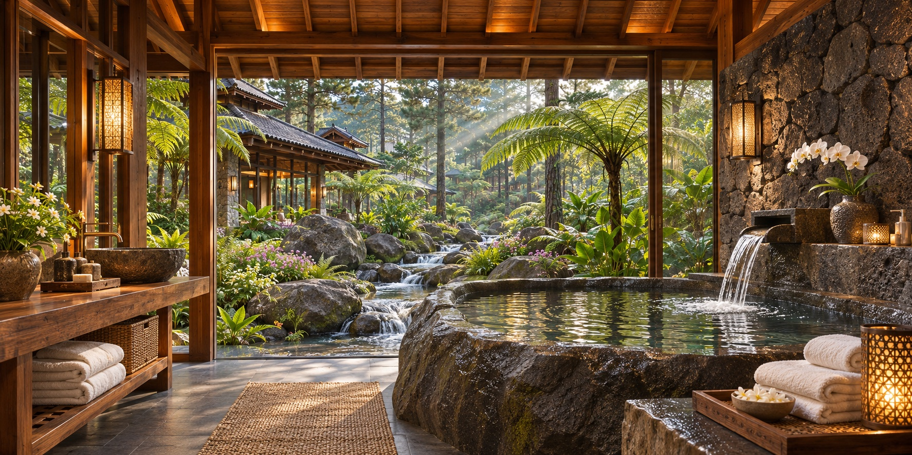
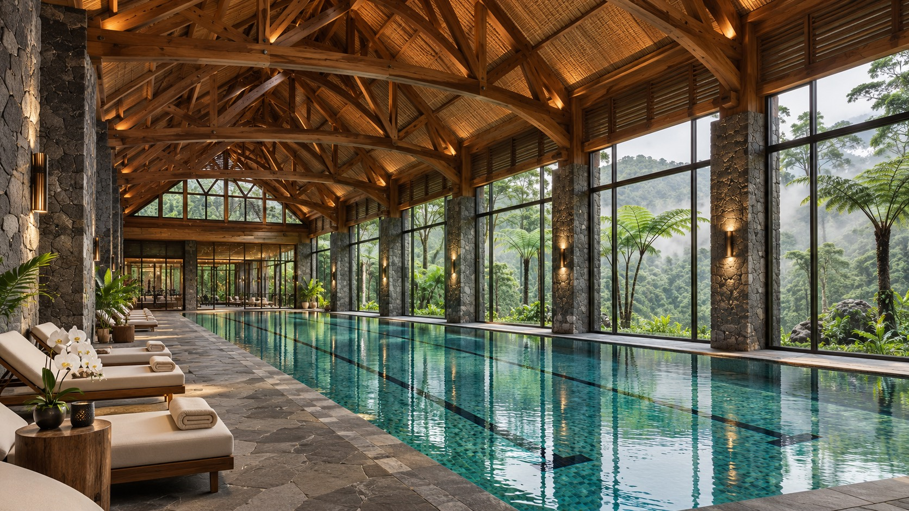
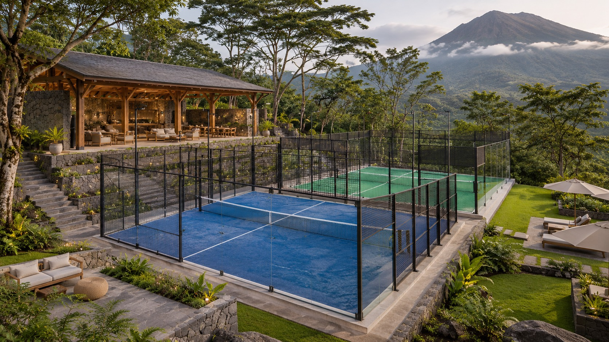
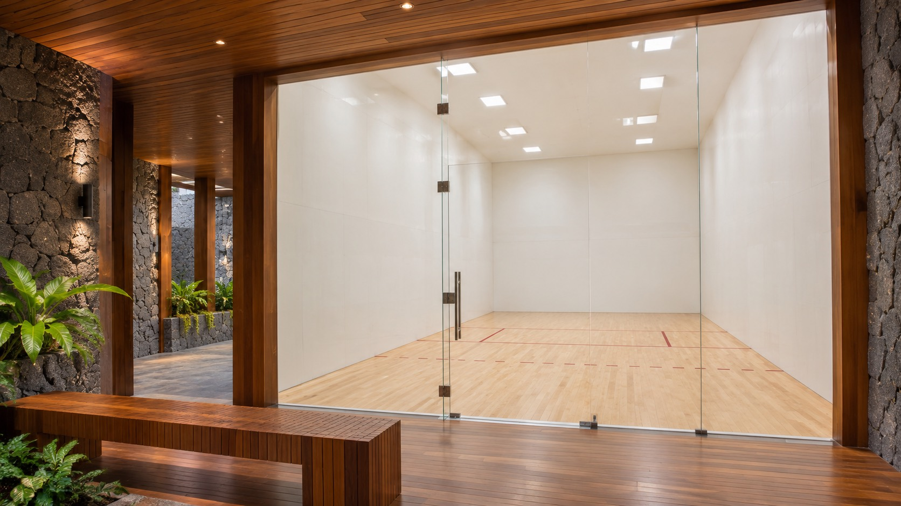

Tennis in the highlands
A dedicated court setting with generous run-off space, planted boundaries and a courtside place to rest.

Wellness & recreation
Spring water, generous bathing rituals and space to feel restored.
The Mount Paradise vision
At the heart of wellness is a substantial mountain bathhouse: a sequence of warm pools, cool immersions, sheltered soaking halls, spa treatments and quiet garden terraces. Water and the volcanic landscape set the tone. Alongside this sanctuary, indoor swimming, fitness and outdoor sport bring energy and balance to mountain life.

Volcanic-filtered mountain spring water
The water story begins high in the surrounding mountains, where spring water makes its slow journey through ancient volcanic rock before flowing down toward the land. Basalt and andesite provide a natural filtering medium. This mountain source inspires the bathing experience: flowing water, warm stone and an unhurried ritual centered on a silky feel on the skin, freshly rinsed hair and a sense of lightness that carries beyond the bath.

The bathing sanctuary
A generous collection of bathing spaces would create a complete spa journey: warm immersion pools, cool plunges, steam rooms, indoor soaking halls and secluded resting terraces. Treatment pavilions and garden paths connect the experiences, allowing an entire afternoon to unfold at its own pace.

Indoor swimming
A substantial indoor pool is envisioned beneath a timber roof, with generous daylight and woodland views. Lap swimming, quiet recovery and sheltered poolside space would complement the outdoor pool gardens.

A dedicated court setting with generous run-off space, planted boundaries and a courtside place to rest.

Padel courts bring an energetic, sociable game into the recreation plan, with spectator terraces close by.

An enclosed racquetball court adds a fast-paced indoor option alongside the outdoor tennis and padel facilities.

A fully indoor gym, with cardio and strength equipment, connects exercise to the landscape through generous windows.

Baths & spa
Warm soaking pools, cool plunges, steam, treatment rooms and resting terraces form the Mountain Baths vision. Natural stone and the mountain water story give this sanctuary its own identity.